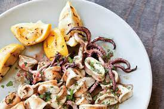

Ensalada de calamar
La ensalada de calamar es un platillo fresco y ligero que se prepara con calamares, por lo general cocidos, y se mezcla con ingredientes frescos y alinos para crear una ensalada deliciosa. Puede ser una opcion refrescante y sabrosa, especialmente en climas calidos. La preparacion especifica puede variar segun la region y las preferencias culinarias, pero a continuacion, se proporciona una descripcion general de como se podria hacer.
